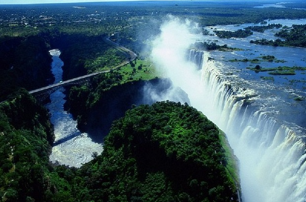

Exploring Natural Wonders
Discover the awe-inspiring beauty of natural landscapes across the globe,
from the Victoria Falls in Zimbabwe to the captivating
Aurora Borealis visible in various countries.
Natural Wonders
- Victoria Falls, Zimbabwe
- Grand Canyon, USA
- Aurora Borealis, Various Countries
- Mount Everest, Nepal
- Great Barrier Reef, Australia
"Nature always wears the colors of the spirit." - Ralph Waldo Emerson
Benefits of Experiencing Natural Beauty
- Fostering a sense of wonder
- Deepening appreciation for the planet
- Creating lasting memories
Discover More

The Majestic Victoria Falls
Explore more natural wonders.